Hagi
Hagi · Yamaguchi
Hagi
Highlighted on the Yamaguchi map.

Sights
Hagi Castle Town

Susa Horunferusu

Matsushita Village Juku
Hagi Shiroato Shigetsu Park

Kochi Zu Wo Katate Nimachiwo Aruko U (Hagi Shiro Castle Town Hen)

Myojin Ike
Hagiyaki Experience
Shoin Shrine
Hagi Onsen Sato
Hagi Onsen
Takasugishinsaku Tanjo Chi
Hagi Hakkei Yuransen
Kuni Shitei Juyo Bunkazai Kikuya Ie House Naito Museum & Yoru Kafe
Hagi · Meirin Gakusha
Roadside Station Hagi Shiimato
Toko Tera
Higashi Hagi Eki Tourist Information
Unrin Tera (Neko Tera)
Kyu Hagi Hanko Meirinkan
Kido Takayoshi Kyutaku
Hagi Museum
Hagi no Sekai Isan Bingorarii 2026
Roadside Station Yutori Park Tamagawa
Hagi Hansharo
Retoro Na Mokuzo Kosha Hagi Meirin Gakusha De Natsukashii Gakko Experience
San Ken Hashi (Megane Hashi)
Roadside Station Hagi Okan
Hagimoto Jin Onsen (Gensen no Yado Hagimoto Jin Yu no Maru)
Kasayama
Susa Wan Ekorojii Campground
Shoin Memorial Museum
Roadside Station Asahi
Mutsumi Konchu Okoku
Kikuya Ie House Aki no Garden Tokubetsu Kokai
Tatamigafuchi
Roadside Station Uri Bo no Sato katamata
Hagi Hakkei Yuransen (Yuhi Kansho Kosu)
Kasayama Kazana
Kochi Zu Wo Katate Nimachiwo Aruko U (Hagi Shiroato Hen)
Hagi Garasu Workshop
Hagi Horiuchi Chiku Dentoteki Kenzobutsu Gun Hozon Chiku
Yoshida Shoin Rekishikan
Togei no Village Park
Ito Hirofumi Kyutaku
Ken Shima
Hagi Hakkei Yuransen Sekai Isan Jio Park HAPPINESS Kosu
Oteru In
Dai Itayama Tatara Seitetsu Iseki
Kikuya Ie House
Tamagawa Onsen Ikoi Baths
Yoshida Shoin Tanjo Chi
Hagi Hakkei Yuransen (Nihonkai Kansho Kosu)
Hagi Tourism Association Gaido
Susa Wan Yuransen
Hagi Okan (Hagi)
Yamagata Aritomo Tanjo Chi
Kochi Zu Wo Katate Nimachiwo Aruko U (Horiuchi Hen) Yasashii Kosu Ari
Kochi Zu Wo Katate Ni, Machiwo Aruko U Kikangentei Kochi Zu Uoku Onari Town Fudaba Ta Town Shopping Street (Hagi)
Yamaguchi Prefectural Hagi Art Museum Uragami Memorial Museum
Hagi Sassa Nami City Dentoteki Kenzobutsu Gun Hozon Chiku
Kikugahama Beach
Kikuya Yoko Town
Roadside Station Hagi Sansan San Ken
Konpira Sha En Matsurigoto Tera
NPO Hagi Kanko Gaido Kyokai
Kochi Zu Wo Katate Nimachiwo Aruko U (Susa Hen)
Hagi Ekisha
Kyu Kubota Ie House
Roadside Station Hapinesu Fukue
Sekai Isan Kosei Shisan (Hagi Hansharo) Shuri Gemba Kengaku Tour
Kikugahama
Kochi Zu Wo Katate Ni, Machiwo Aruko U Kikangentei Kochi Zu Uoku Tera Town Chonin Chi (Hagi)
Hagi Castle Town no Natsu Mikan no Hana no Kaori
Yoshida Shoin Yushu no Kyutaku
Kochi Zu Wo Katate Nimachiwo Aruko U (Hamasaki Hen)
Kochi Zu Wo Katate Ni, Machiwo Aruko U Kikangentei Kochi Zu Uoku Aidama Za (Hagi)
Namida Matsu Ato / Namida Matsu Iseki (Hagi Okan)
Kochi Zu Wo Katate Nimachiwo Aruko U (Sassa Nami City Hen)
Hagi Akuteibitei Park
Tamagawa Campground
Noyama Goku Iwakura Goku Ato
Murasaki Fuku no Kakure Kirishitan Ibutsu
Kasayama Funkako
Hagi Abu Kawa Onsen Fureai Hall
Ai Ba Kawa
Kusaka Genzui Tanjo Chi
Mutsumi Furawarodo
Ebisugahana Zosenjo Ato
Uzu Kannon Do
Shinsui Park Kawazu Sakura
Hagi Hanshu Mori Ie Hakasho (Kyu Ten Ki In Hakasho)
Sekai Isan Toroku 10 Shunen Kikaku Hagi Castle Town Shuyu Puroguramu (Riaru Takara Sagashi)
Chiharu Rakusen (Hagiyaki no Yado Chiharu Raku)
Issho Tani no Ishidatami (Hagi Okan)
Susa Wan Fisshingu Park
Castle Town Totteoki Taiken Puran ” Ima Mukashi Jikan no Haguruma Wo Mawasu Tabi ”
Kita Nagato Coast
Yatomi Soba Uchi Experience
Kasayama Tsubaki Gunsei Hayashi
Hagi Jio Park Jiogaido
Edoya Yoko Town
Kochi Zu Wo Katate Ni, Machiwo Aruko U Kikangentei Kochi Zu Kosu Hagi Shiromoto Maru Ni no Maru San no Maru (Hagi)
Hagi Okan Umebayashi Sono
Ken Shima Ushi
Ito Hirofumi Bettei
Nagato Kyo Onsen Yu no Se
Kochi Zu Wo Katate Ni, Machiwo Aruko U Kikangentei Kochi Zu Kosu Gosho Kumagaya Ie (Hagi)
Kimono Wo Kita Mama Dendo Kikkubodo Ni Notte Hagi Sansaku
Hanae Chatei (Shigetsu Park)
Yoshida Shoin no Haka Oyobi Hakasho
Hagiyaki Koyo Ato Gun
Hagi Hakkei Yuransen (Sakura Kansho Kosu)
Abu Kawa Dam (Abu Mizumi)
NPO Hagi Machiju Museum Kochi Zu Gaidochiimu Ho Sumi Ken
Kagi Kyoku
Kuchiba Ie House
Hagi Hakkei Yuransen (Sakura Koyo Kansho Kosu)
Hagi Seminahausu
Kumagaya Art Museum
Shoin Jinja Takaramono Dono (Shisei Kan)
Cho Iso Beach
Fuku Basan Nemu no Oka Campground
Susa Wan
Hagi Castle Town Padoruokingu
Tsubaki no Kan
Enkoji Ana Kannon Burial Mound
Inoe Kachi Kyutaku Ato
Hagi Kirishitan Junkyo Mono Memorial Park
E-Bike De Meguru FURUSATO Saikuringu (Castle Town Kosu)
Kyu Hagi Han Mifune Kura
Kajitori Moto Hiko Kyutaku Chi
Hagiyaki Dentokogei Samuraigachoku Shido ! Kashikiri Kukan De Hagiyaki no Tsuchi to Bunka Ni Fureru Jujitsu no Togei Experience
Segoe Beach
Nori Ishi Coast
Kumagaya Ie House
Tamagawa
Hagi no Take Kara Tsukutsu Ta Chikushi De Issho Mo no no Ranpushiedo Tsukuri Experience
Kyu Yukawa Ie Residence
Sumiyoshi Shrine
Mugen Kukan /GI Paddlers (Gi Padorazu)
Hagi Onsenryokan Kyodokumiai
Ken Shima Jiikombo Kofun Gun
Hagi Shigetsu Onsen (Resort Hotel Bi Hagi)
Kase Suido
Susa Horunferusu Shuhen Tsuwabuki
Kyu Sufu Kacho Ya Mon
Ton Ta Masuda Shi Kyutaku Dobei
Tamaki Bunnoshin Kyutaku
to Hi Fudaba Ato (Hagi Okan)
Fukama Tekata Beach
Kyu Asa Mori Ie Hagi Yashiki Nagaya
Hagi Okan Koryu Shisetsu Uba no Chaya
Hagi Hamasaki Dentoteki Kenzobutsu Gun Hozon Chiku
Bukko Tera (Mokuzo Monju Bosatsu Kishi Zo)
Jishaku Ishi
Meirinkan Iko Minamimon
Kyu Kobayashi Ie House (Hagi Okan Omotenashi Chaya)
Iseya Yoko Town
Hagi Susa Folk History Museum
Yoshika Dai Mayu Memorial Museum
Hagiyaki Museum
Hagi Ai Ba Kawa Tsuchihara Kosu
Hashimoto Kawa Sakura Namiki
Keita Ro Kyutaku
Zenpukuji
Kankitsu Park
Kumagaya Shi Tei Garden
Kozan (Jishaku Ishi)
Meirinkan Iko Seibyo (Kaicho Tera)
Hagi Kyu Matsumoto Village Kosu
Ishibori Park
Minato Beach
Ryuzo Jikan Oto Do
Kozan Misaki
Toragasaki
Tanaka Giichi Tanjo Chi
Ochi Yoshitaka Kuyo to
Rokushima Sho Shima
Shita Yokose Kominkan (Kyu Akiragi Village Library)
Kita Lighthouse
Hagi Shiro Castle Town Kosu
Sekai Isan Toroku 10 Shunen Kinen Kikakuten (Shin Hagi no Sekai Isan)
Kasayama Jiogaido Tour
Konoma Shobuen
Kyu Sanchu Ie House
Yoshida Shoin Toso no Hi
Oku Abu Saiban Kan Ba Ato
Tsubaki Hachiman Shrine
Tomonobu Kagura Mai
Hagi Heian Kochi Ku Dentoteki Kenzobutsu Gun Hozon Chiku
Kikugahama Dorui (Onna Daiba)
Maehara Issei Kyutaku
Abu Kawa
Heian Hashi
Kagura
Meirinkan Iko Seiken Do
Hagimae 698 Godo Kaisha (Hagi no Fugusabaki Ryori Experience)
Kasuga Shrine
Matsura Matsu Hora Tanjo Chi
Ana Kannon Burial Mound
Jonen Tera Omotemon
Minyo (Otoko Nara)
Tamae Ura (Tengu Hyoshi)
Hagi Hamasaki Shoka Town Kosu
Abu Kawa Folk History Museum
Yamada Akiyoshi Tanjo Chi (Akiyoshi Sono)
Kagura
Kyu Fukuhara Ie Hagi Yashiki Mon
Susa Wan Shizen Kenkyu Michi
Fuchigataira Promenade
Sui Saka Ichiri Tsuka
Tamagawa no Chujo Setsuri to Suichu Ji Hasai Yogan
Ochiai no Ishibashi
Nishi Dotera Rokkaku Do
Yome Naki Fushi
Hagi Museum 20 Shunen Kinen Kikakuten Bakumatsu Ishin no Aki - Ogawa Korekushon Kara
Hagi Suzuno Kawa / Hotaru
Choju Tera (Jusan Ju to)
Kodomo Kagura
Yoshimi Masayori Sokujo no Haka
Shitsu Kizan Shrine
Segoe Promenade
Tanaka Giichi Bettei
Hagi Nature to Rekishi no Tenjikan
Tsujiyama no Shidarezakura
Susa Karatsu Koyo Ato Gun
Aoki Shusuke Kyutaku
Gunji Chuzo Tokoro Iko Plaza
Watanabe Yomogi Kura Kyutaku
Hagi Yamada Chiku / Hotaru
Morita Ie House
Tsuboi Kyu Uemon Kyutaku
Byobu Iwa
Konoma (Kamishiro no Mai)
Irie Kuichi no Village Yasushi Tanjo Chi
Shigetsu Yama / Mikadoageha
Gan Shima Shrine
Ken Shima no Kame Seisokuchi
Shinagawa Yajiro Kyutaku Ato
Yoshida Toshimaro Tanjo Chi
Nagasawa Dai
Sensu Raku Taki
Hagi Gakko Kyoin Shitsu
Shogaigakushu Museum
Susa Chi Burial Mound
Tsukana Burial Mound
Jocho Se Ichiri Tsuka
Sassa Namikawa Dam
Murata Seifu Bettaku Ato
Toya no Moriaogaeru
Hagi Kichibu Shita Omitsu Tera / Hotaru
Ukifune Iori no Haka
Ogawa Kacho Ya Mon
O Sonae Gyoretsu
Nagai Gagaku Kyutaku Ato
Meirinkan Iko Banzai Hashi
Fuchigataira Falls
Mai (Otoko Nara)
Gimin Odori
Hagi Yakusho
Dining
吉田町まる。
Yoshidachou Maru .
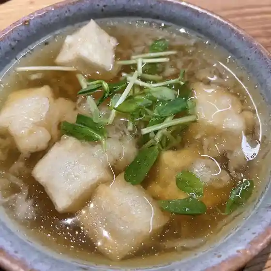
レストランまつおか
Resutoran Matsuoka
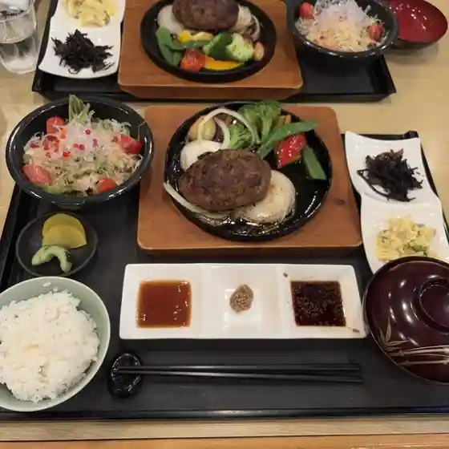
ブラッセリー ラボ
Burasserii Rabo
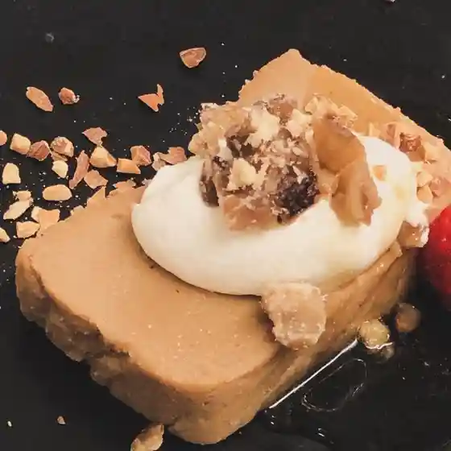
サランポチャ
Saranpocha
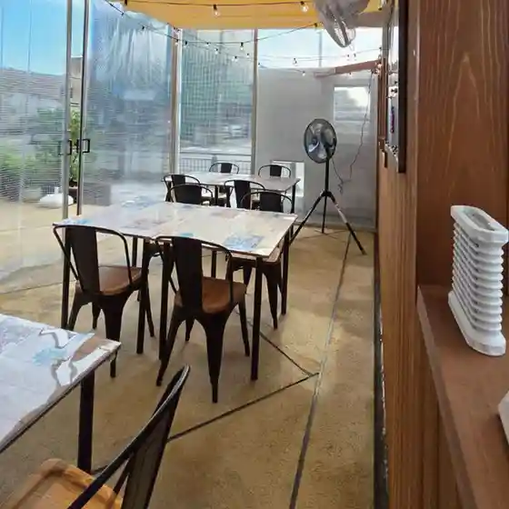
魚民 萩店
Uotami Hagi Mise

旺鑫閣
Ou
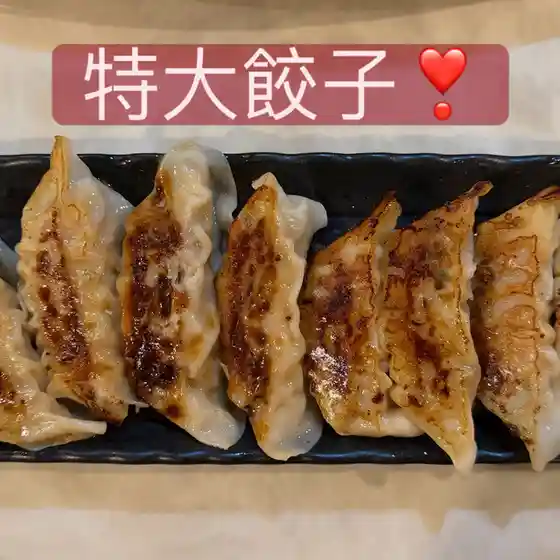
網焼レストラン 見蘭
Amiyaki Resutoran Ken Ran
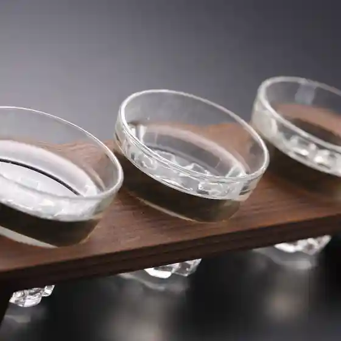
牛角 萩店
Gyuukaku Hagi Mise
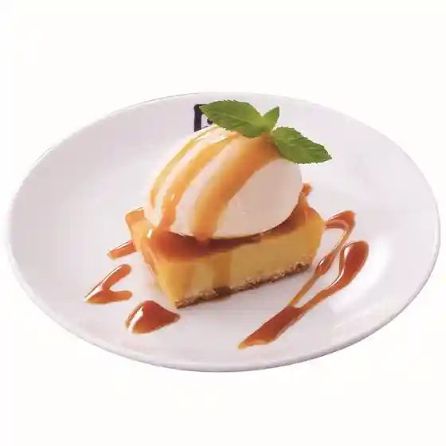
はた満
Hata Man
めしや ぶち
Meshiya Buchi
萩心海
Hagi Shinkai
たまがわ食堂
Tamagawa Shokudou
光國本店
Mitsukuni Honten
ふみ
Fumi
牛ちゃん
Ushi Chan
どんどん 土原店
Dondon Tsuchihara Mise
ナチュラル オリエンテッドホーム ラ・セイバ
Nachuraru Orienteddohoomu Ra・Seiba
JAファーマーズマーケット ふれあいらんど萩
Ja Faamaazumaaketto Fureairando Hagi
そらいろ菓子店
Sorairo Kashi Mise
小川蜜カス本舗 サンリブ萩店
Ogawa Mitsu Kasu Honpo Sanribu Hagi Mise
めんくい
Menkui
蕎麦＆カフェ 燈里
Soba & Kafe Tou Sato
手打ち蕎麦 さるのこしかけ
Teuchi Chi Soba Sarunokoshikake
つわぶきの館
Tsuwabukino Kan
美志満屋
Bi Shima Ya
萩の宿 常茂恵
Hagi No Yado Tsune Shigeru Megumi
海鮮食道 十八番
Kaisen Shokudou Juuhachiban
広島お好み焼き 萩侍
Hiroshima O Konomi Yaki Hagi Samurai
おっちゃん
Otchan
友楽鳥
Tomo Raku Tori
あんのけんそーカレー部
Annokensoo Karee Bu
こまち
Komachi
御食事処 わらじ
Mike Koto Tokoro Waraji
道の駅あさひ
Michi No Eki Asahi
いかマルシェ スサノモノミトコ館
Ika Marushie Susanomonomitoko Kan
萩ロイヤルインテリジェントホテル
Hagi Roiyaruinterijientohoteru
ガスト 萩店
Gasuto Hagi Mise
渡辺コレクション
Watanabe Korekushon
PUB H&L
Pub H&Amp;L
あんず
Anzu
ハピネスふくえ
Hapinesu Fukue
ノーサイド
Noosaido
味酔
Aji Sui
カフェ ぶらり
Kafe Burari
指月弁当
Shigetsu Bentou
穂の花
Ho No Hana
海鳴りベーカリー 仕立
Uminari Ri Beekarii Shitate
レストラン 萩暦
Resutoran Hagi Koyomi
アトラス 萩店
Atorasu Hagi Mise
喫茶なないろ
Kissa Nanairo
えんのした
Ennoshita
むらやカフェ
Muraya Kafe
うまいもん処 ただいま 道の駅田万川店
Umaimon Tokoro Tadaima Michi No Eki Tamagawa Mise
むつみ キッチンばぁ～ば
Mutsumi Kitchin Baa ~ Ba
河忠
Kawa Tadashi
たぬき
Tanuki
ジョイフル 萩店
Joifuru Hagi Mise
村田蒲鉾 総本店
Murata Kamaboko Souhonten
Kunelplus
Kunelplus
天草
Amakusa
Tangotei Hagi Yamaguchi Prefecture Chugoku
Tangotei Hagi Yamaguchi Prefecture Chugoku
Tangotei Hagi Yamaguchi Prefecture Chugoku
Tangotei Hagi Yamaguchi Prefecture Chugoku
Tangotei Hagi Yamaguchi Prefecture Chugoku
Tangotei Hagi Yamaguchi Prefecture Chugoku
Tangotei Hagi Yamaguchi Prefecture Chugoku
Tangotei Hagi Yamaguchi Prefecture Chugoku
Hagishinkai Hagi Yamaguchi Prefecture Chugoku
Hagishinkai Hagi Yamaguchi Prefecture Chugoku
Hagishinkai Hagi Yamaguchi Prefecture Chugoku
Hagishinkai Hagi Yamaguchi Prefecture Chugoku
Hagishinkai Hagi Yamaguchi Prefecture Chugoku
Hagishinkai Hagi Yamaguchi Prefecture Chugoku
Hagishinkai Hagi Yamaguchi Prefecture Chugoku
Hagishinkai Hagi Yamaguchi Prefecture Chugoku
Dondon Hagi Yamaguchi Prefecture Chugoku
Dondon Hagi Yamaguchi Prefecture Chugoku
Dondon Hagi Yamaguchi Prefecture Chugoku
Dondon Hagi Yamaguchi Prefecture Chugoku
Dondon Hagi Yamaguchi Prefecture Chugoku
Dondon Hagi Yamaguchi Prefecture Chugoku
Dondon Hagi Yamaguchi Prefecture Chugoku
Dondon Hagi Yamaguchi Prefecture Chugoku
Michi No Eki Hagi Shimato Ishin Tei Hagi Yamaguchi Prefecture Chugoku
Michi No Eki Hagi Shimato Ishin Tei Hagi Yamaguchi Prefecture Chugoku
Michi No Eki Hagi Shimato Ishin Tei Hagi Yamaguchi Prefecture Chugoku
Michi No Eki Hagi Shimato Ishin Tei Hagi Yamaguchi Prefecture Chugoku
Michi No Eki Hagi Shimato Ishin Tei Hagi Yamaguchi Prefecture Chugoku
Michi No Eki Hagi Shimato Ishin Tei Hagi Yamaguchi Prefecture Chugoku
Michi No Eki Hagi Shimato Ishin Tei Hagi Yamaguchi Prefecture Chugoku
Michi No Eki Hagi Shimato Ishin Tei Hagi Yamaguchi Prefecture Chugoku
Umenoha Hagi Yamaguchi Prefecture Chugoku
Umenoha Hagi Yamaguchi Prefecture Chugoku
Umenoha Hagi Yamaguchi Prefecture Chugoku
Umenoha Hagi Yamaguchi Prefecture Chugoku
Umenoha Hagi Yamaguchi Prefecture Chugoku
Umenoha Hagi Yamaguchi Prefecture Chugoku
Umenoha Hagi Yamaguchi Prefecture Chugoku
Umenoha Hagi Yamaguchi Prefecture Chugoku
MARU Hagi Yamaguchi Prefecture Chugoku
MARU Hagi Yamaguchi Prefecture Chugoku
MARU Hagi Yamaguchi Prefecture Chugoku
MARU Hagi Yamaguchi Prefecture Chugoku
MARU Hagi Yamaguchi Prefecture Chugoku
MARU Hagi Yamaguchi Prefecture Chugoku
MARU Hagi Yamaguchi Prefecture Chugoku
MARU Hagi Yamaguchi Prefecture Chugoku
Isoman Hagi Yamaguchi Prefecture Chugoku
Isoman Hagi Yamaguchi Prefecture Chugoku
Isoman Hagi Yamaguchi Prefecture Chugoku
Isoman Hagi Yamaguchi Prefecture Chugoku
Isoman Hagi Yamaguchi Prefecture Chugoku
Isoman Hagi Yamaguchi Prefecture Chugoku
Isoman Hagi Yamaguchi Prefecture Chugoku
Isoman Hagi Yamaguchi Prefecture Chugoku
MARU Hagi Yamaguchi Prefecture Chugoku
MARU Hagi Yamaguchi Prefecture Chugoku
MARU Hagi Yamaguchi Prefecture Chugoku
MARU Hagi Yamaguchi Prefecture Chugoku
Hagi Museum Restaurant Hagi Yamaguchi Prefecture Chugoku
Hagi Museum Restaurant Hagi Yamaguchi Prefecture Chugoku
Hagi Museum Restaurant Hagi Yamaguchi Prefecture Chugoku
Hagi Museum Restaurant Hagi Yamaguchi Prefecture Chugoku
Michi No Eki Hagi Shimato Ishin Tei Hagi Yamaguchi Prefecture Chugoku
Michi No Eki Hagi Shimato Ishin Tei Hagi Yamaguchi Prefecture Chugoku
Michi No Eki Hagi Shimato Ishin Tei Hagi Yamaguchi Prefecture Chugoku
Michi No Eki Hagi Shimato Ishin Tei Hagi Yamaguchi Prefecture Chugoku
Hagishinkai Hagi Yamaguchi Prefecture Chugoku
Hagishinkai Hagi Yamaguchi Prefecture Chugoku
Hagishinkai Hagi Yamaguchi Prefecture Chugoku
Hagishinkai Hagi Yamaguchi Prefecture Chugoku
Kotokoto Hagi Yamaguchi Prefecture Chugoku
Kotokoto Hagi Yamaguchi Prefecture Chugoku
Kotokoto Hagi Yamaguchi Prefecture Chugoku
Kotokoto Hagi Yamaguchi Prefecture Chugoku
Umenoha Hagi Yamaguchi Prefecture Chugoku
Umenoha Hagi Yamaguchi Prefecture Chugoku
Umenoha Hagi Yamaguchi Prefecture Chugoku
Umenoha Hagi Yamaguchi Prefecture Chugoku
Seafood Restaurant Gangan Hagi Yamaguchi Prefecture Chugoku
Seafood Restaurant Gangan Hagi Yamaguchi Prefecture Chugoku
Seafood Restaurant Gangan Hagi Yamaguchi Prefecture Chugoku
Seafood Restaurant Gangan Hagi Yamaguchi Prefecture Chugoku
Kimono Style Cafe Hagi Yamaguchi Prefecture Chugoku
Kimono Style Cafe Hagi Yamaguchi Prefecture Chugoku
Kimono Style Cafe Hagi Yamaguchi Prefecture Chugoku
Kimono Style Cafe Hagi Yamaguchi Prefecture Chugoku
Dining Mameta Hagi Yamaguchi Prefecture Chugoku
Dining Mameta Hagi Yamaguchi Prefecture Chugoku
Dining Mameta Hagi Yamaguchi Prefecture Chugoku
Dining Mameta Hagi Yamaguchi Prefecture Chugoku
Kafeteriaijinkan Hagi Yamaguchi Prefecture Chugoku
Kafeteriaijinkan Hagi Yamaguchi Prefecture Chugoku
Kafeteriaijinkan Hagi Yamaguchi Prefecture Chugoku
Kafeteriaijinkan Hagi Yamaguchi Prefecture Chugoku
Kokura Hagi Yamaguchi Prefecture Chugoku
Kokura Hagi Yamaguchi Prefecture Chugoku
Kokura Hagi Yamaguchi Prefecture Chugoku
Kokura Hagi Yamaguchi Prefecture Chugoku
Kokura Hagi Yamaguchi Prefecture Chugoku
Kokura Hagi Yamaguchi Prefecture Chugoku
Kokura Hagi Yamaguchi Prefecture Chugoku
Kokura Hagi Yamaguchi Prefecture Chugoku
Seafood Restaurant Gangan Hagi Yamaguchi Prefecture Chugoku
Seafood Restaurant Gangan Hagi Yamaguchi Prefecture Chugoku
Seafood Restaurant Gangan Hagi Yamaguchi Prefecture Chugoku
Seafood Restaurant Gangan Hagi Yamaguchi Prefecture Chugoku
Seafood Restaurant Gangan Hagi Yamaguchi Prefecture Chugoku
Seafood Restaurant Gangan Hagi Yamaguchi Prefecture Chugoku
Seafood Restaurant Gangan Hagi Yamaguchi Prefecture Chugoku
Seafood Restaurant Gangan Hagi Yamaguchi Prefecture Chugoku
Hotoritei Hagi Yamaguchi Prefecture Chugoku
Hotoritei Hagi Yamaguchi Prefecture Chugoku
Hotoritei Hagi Yamaguchi Prefecture Chugoku
Hotoritei Hagi Yamaguchi Prefecture Chugoku
Hotoritei Hagi Yamaguchi Prefecture Chugoku
Hotoritei Hagi Yamaguchi Prefecture Chugoku
Hotoritei Hagi Yamaguchi Prefecture Chugoku
Hotoritei Hagi Yamaguchi Prefecture Chugoku
Restaurant Kihagi Hagi Yamaguchi Prefecture Chugoku
Restaurant Kihagi Hagi Yamaguchi Prefecture Chugoku
Restaurant Kihagi Hagi Yamaguchi Prefecture Chugoku
Restaurant Kihagi Hagi Yamaguchi Prefecture Chugoku
Restaurant Kihagi Hagi Yamaguchi Prefecture Chugoku
Restaurant Kihagi Hagi Yamaguchi Prefecture Chugoku
Restaurant Kihagi Hagi Yamaguchi Prefecture Chugoku
Restaurant Kihagi Hagi Yamaguchi Prefecture Chugoku
Kappo Chiyo Hagi Yamaguchi Prefecture Chugoku
Kappo Chiyo Hagi Yamaguchi Prefecture Chugoku
Kappo Chiyo Hagi Yamaguchi Prefecture Chugoku
Kappo Chiyo Hagi Yamaguchi Prefecture Chugoku
Kappo Chiyo Hagi Yamaguchi Prefecture Chugoku
Kappo Chiyo Hagi Yamaguchi Prefecture Chugoku
Kappo Chiyo Hagi Yamaguchi Prefecture Chugoku
Kappo Chiyo Hagi Yamaguchi Prefecture Chugoku
Hataman Hagi Yamaguchi Prefecture Chugoku
Hataman Hagi Yamaguchi Prefecture Chugoku
Hataman Hagi Yamaguchi Prefecture Chugoku
Hataman Hagi Yamaguchi Prefecture Chugoku
Hataman Hagi Yamaguchi Prefecture Chugoku
Hataman Hagi Yamaguchi Prefecture Chugoku
Hataman Hagi Yamaguchi Prefecture Chugoku
Hataman Hagi Yamaguchi Prefecture Chugoku
Asukatei Hagi Hagi Yamaguchi Prefecture Chugoku
Asukatei Hagi Hagi Yamaguchi Prefecture Chugoku
Asukatei Hagi Hagi Yamaguchi Prefecture Chugoku
Asukatei Hagi Hagi Yamaguchi Prefecture Chugoku
Asukatei Hagi Hagi Yamaguchi Prefecture Chugoku
Asukatei Hagi Hagi Yamaguchi Prefecture Chugoku
Asukatei Hagi Hagi Yamaguchi Prefecture Chugoku
Asukatei Hagi Hagi Yamaguchi Prefecture Chugoku
Dining Mameta Hagi Yamaguchi Prefecture Chugoku
Dining Mameta Hagi Yamaguchi Prefecture Chugoku
Dining Mameta Hagi Yamaguchi Prefecture Chugoku
Dining Mameta Hagi Yamaguchi Prefecture Chugoku
Dining Mameta Hagi Yamaguchi Prefecture Chugoku
Dining Mameta Hagi Yamaguchi Prefecture Chugoku
Dining Mameta Hagi Yamaguchi Prefecture Chugoku
Dining Mameta Hagi Yamaguchi Prefecture Chugoku
Kafeteriaijinkan Hagi Yamaguchi Prefecture Chugoku
Kafeteriaijinkan Hagi Yamaguchi Prefecture Chugoku
Kafeteriaijinkan Hagi Yamaguchi Prefecture Chugoku
Kafeteriaijinkan Hagi Yamaguchi Prefecture Chugoku
Kafeteriaijinkan Hagi Yamaguchi Prefecture Chugoku
Kafeteriaijinkan Hagi Yamaguchi Prefecture Chugoku
Kafeteriaijinkan Hagi Yamaguchi Prefecture Chugoku
Kafeteriaijinkan Hagi Yamaguchi Prefecture Chugoku
Kimono Style Cafe Hagi Yamaguchi Prefecture Chugoku
Kimono Style Cafe Hagi Yamaguchi Prefecture Chugoku
Kimono Style Cafe Hagi Yamaguchi Prefecture Chugoku
Kimono Style Cafe Hagi Yamaguchi Prefecture Chugoku
Kimono Style Cafe Hagi Yamaguchi Prefecture Chugoku
Kimono Style Cafe Hagi Yamaguchi Prefecture Chugoku
Kimono Style Cafe Hagi Yamaguchi Prefecture Chugoku
Kimono Style Cafe Hagi Yamaguchi Prefecture Chugoku
Hagi Museum Restaurant Hagi Yamaguchi Prefecture Chugoku
Hagi Museum Restaurant Hagi Yamaguchi Prefecture Chugoku
Hagi Museum Restaurant Hagi Yamaguchi Prefecture Chugoku
Hagi Museum Restaurant Hagi Yamaguchi Prefecture Chugoku
Hagi Museum Restaurant Hagi Yamaguchi Prefecture Chugoku
Hagi Museum Restaurant Hagi Yamaguchi Prefecture Chugoku
Hagi Museum Restaurant Hagi Yamaguchi Prefecture Chugoku
Hagi Museum Restaurant Hagi Yamaguchi Prefecture Chugoku
Kotokoto Hagi Yamaguchi Prefecture Chugoku
Kotokoto Hagi Yamaguchi Prefecture Chugoku
Kotokoto Hagi Yamaguchi Prefecture Chugoku
Kotokoto Hagi Yamaguchi Prefecture Chugoku
Kotokoto Hagi Yamaguchi Prefecture Chugoku
Kotokoto Hagi Yamaguchi Prefecture Chugoku
Kotokoto Hagi Yamaguchi Prefecture Chugoku
Kotokoto Hagi Yamaguchi Prefecture Chugoku
Ajiro Hagi Yamaguchi Prefecture Chugoku
Ajiro Hagi Yamaguchi Prefecture Chugoku
Ajiro Hagi Yamaguchi Prefecture Chugoku
Ajiro Hagi Yamaguchi Prefecture Chugoku
Ajiro Hagi Yamaguchi Prefecture Chugoku
Ajiro Hagi Yamaguchi Prefecture Chugoku
Ajiro Hagi Yamaguchi Prefecture Chugoku
Ajiro Hagi Yamaguchi Prefecture Chugoku
Kenran Gyu Dining Gen Hagi Yamaguchi Prefecture Chugoku
Kenran Gyu Dining Gen Hagi Yamaguchi Prefecture Chugoku
Kenran Gyu Dining Gen Hagi Yamaguchi Prefecture Chugoku
Kenran Gyu Dining Gen Hagi Yamaguchi Prefecture Chugoku
Kenran Gyu Dining Gen Hagi Yamaguchi Prefecture Chugoku
Kenran Gyu Dining Gen Hagi Yamaguchi Prefecture Chugoku
Kenran Gyu Dining Gen Hagi Yamaguchi Prefecture Chugoku
Kenran Gyu Dining Gen Hagi Yamaguchi Prefecture Chugoku
Sobaho Fujitaya Hagi Yamaguchi Prefecture Chugoku
Sobaho Fujitaya Hagi Yamaguchi Prefecture Chugoku
Sobaho Fujitaya Hagi Yamaguchi Prefecture Chugoku
Sobaho Fujitaya Hagi Yamaguchi Prefecture Chugoku
Sobaho Fujitaya Hagi Yamaguchi Prefecture Chugoku
Sobaho Fujitaya Hagi Yamaguchi Prefecture Chugoku
Sobaho Fujitaya Hagi Yamaguchi Prefecture Chugoku
Sobaho Fujitaya Hagi Yamaguchi Prefecture Chugoku
Amigo Hagi Yamaguchi Prefecture Chugoku
Amigo Hagi Yamaguchi Prefecture Chugoku
Amigo Hagi Yamaguchi Prefecture Chugoku
Amigo Hagi Yamaguchi Prefecture Chugoku
Amigo Hagi Yamaguchi Prefecture Chugoku
Amigo Hagi Yamaguchi Prefecture Chugoku
Amigo Hagi Yamaguchi Prefecture Chugoku
Amigo Hagi Yamaguchi Prefecture Chugoku
Asahi Michino Eki Hagi Yamaguchi Prefecture Chugoku
Asahi Michino Eki Hagi Yamaguchi Prefecture Chugoku
Asahi Michino Eki Hagi Yamaguchi Prefecture Chugoku
Asahi Michino Eki Hagi Yamaguchi Prefecture Chugoku
Asahi Michino Eki Hagi Yamaguchi Prefecture Chugoku
Asahi Michino Eki Hagi Yamaguchi Prefecture Chugoku
Asahi Michino Eki Hagi Yamaguchi Prefecture Chugoku
Asahi Michino Eki Hagi Yamaguchi Prefecture Chugoku
La Ceiba Hagi Yamaguchi Prefecture Chugoku
La Ceiba Hagi Yamaguchi Prefecture Chugoku
La Ceiba Hagi Yamaguchi Prefecture Chugoku
La Ceiba Hagi Yamaguchi Prefecture Chugoku
La Ceiba Hagi Yamaguchi Prefecture Chugoku
La Ceiba Hagi Yamaguchi Prefecture Chugoku
La Ceiba Hagi Yamaguchi Prefecture Chugoku
La Ceiba Hagi Yamaguchi Prefecture Chugoku
Stay
グラン・ジュテ萩
Guran・Jute Hagi
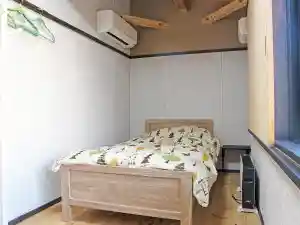
旅人の宿 はぎタイム
Tabibito No Yado Hagi Taimu
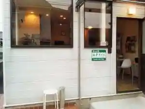
民宿 阿武川
Minshuku Abu Kawa
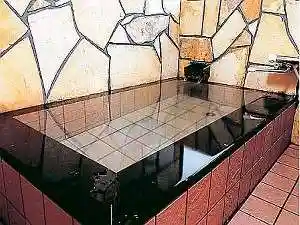
萩トラベルイン
Hagi Toraberuin
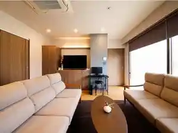
萩の宿 常茂恵
Hagi No Yado Tsune Shigeru Megumi
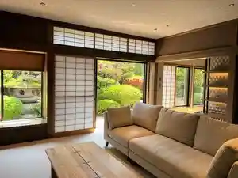
プチホテル クランベール
Puchihoteru Kuranbeeru
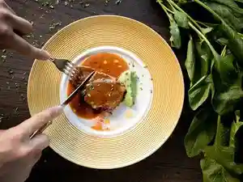
海が奏でる癒しの宿 リゾートホテル美萩
Umi Ga Kanade Ru Iyashi No Yado Rizootohoteru Bi Hagi
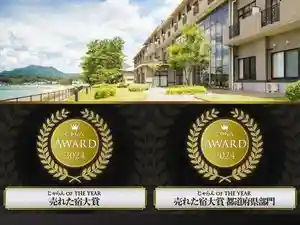
GUEST HOUSE バイクヤノニカイ
Guest House Baikuyanonikai
宵待ちの宿 萩一輪
Yoimachi Chino Yado Hagi Ichirin
萩の風を感じる宿～レンタルハウス はぎ風鈴
Hagi No Kaze Wo Kanji Ru Yado ~ Rentaruhausu Hagi Fuurin
萩ロイヤルインテリジェントホテル
Hagi Roiyaruinterijientohoteru
萩城三ノ丸 北門屋敷
Hagi Shiro San No Maru Kitamon Yashiki
萩八景 雁嶋別荘（がんじまべっそう）
Hagi Hakkei Gan Shima Bessou ( Ganjimabessou )
萩焼の宿 千春楽
Hagiyaki No Yado Chiharu Raku
源泉の宿 萩本陣
Gensen No Yado Hagimoto Jin
夕景の宿 海のゆりかご 萩小町
Yuukei No Yado Umi Noyurikago Hagi Komachi
眺望絶佳・露天風呂の宿 萩観光ホテル
Choubou Zekka ・ Rotenburo No Yado Hagi Kankou Hoteru
華夷弁別・萩三見 KAIBENBETSU HAGISANMI
Kai Benbetsu ・ Hagi San Ken Kaibenbetsu Hagisanmi
小室屋旅館
Komuro Ya Ryokan
ピースINN萩
Piisu Inn Hagi